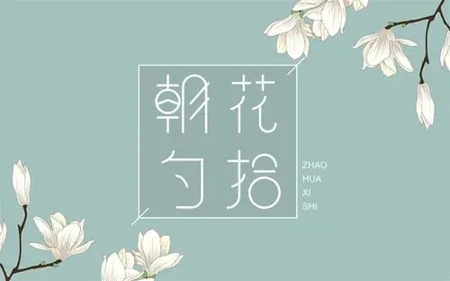

朝花夕拾
《朝花夕拾》原名《旧事重提》，是现代文学家鲁迅的散文集，收录鲁迅于1926年创作的10篇回忆性散文， [1] 1928年由北京未名社出版，现编入《鲁迅全集》第2卷。
此文集作为“回忆的记事”，多侧面地反映了作者鲁迅青少年时期的生活，形象地反映了他的性格和志趣的形成经过。前七篇反映他童年时代在绍兴的家庭和私塾中的生活情景，后三篇叙述他从家乡到南京，又到日本留学，然后回国教书的经历；揭露了半封建半殖民地社会种种丑恶的不合理现象，同时反映了有抱负的青年知识分子在旧中国茫茫黑夜中，不畏艰险，寻找光明的困难历程，以及抒发了作者对往日亲友、师长的怀念之情 [2] 。
文集以记事为主，饱含着浓烈的抒情气息，往往又夹以议论，做到了抒情、叙事和议论融为一体，优美和谐，朴实感人。作品富有诗情画意，又不时穿插着幽默和讽喻；形象生动，格调明朗，有强烈的感染力 [3] 。
此文集作为“回忆的记事”，多侧面地反映了作者鲁迅青少年时期的生活，形象地反映了他的性格和志趣的形成经过。前七篇反映他童年时代在绍兴的家庭和私塾中的生活情景，后三篇叙述他从家乡到南京，又到日本留学，然后回国教书的经历；揭露了半封建半殖民地社会种种丑恶的不合理现象，同时反映了有抱负的青年知识分子在旧中国茫茫黑夜中，不畏艰险，寻找光明的困难历程，以及抒发了作者对往日亲友、师长的怀念之情 [2] 。
文集以记事为主，饱含着浓烈的抒情气息，往往又夹以议论，做到了抒情、叙事和议论融为一体，优美和谐，朴实感人。作品富有诗情画意，又不时穿插着幽默和讽喻；形象生动，格调明朗，有强烈的感染力 [3] 。
阅读
内容简介
主要内容：
《朝花夕拾》是鲁迅先生的一本散文集，收入鲁迅先生1926年所作回忆散文共10篇。其中前五篇写于北京，后五篇写于厦门。最初陆续发表于《莽原》半月 刊，以《旧事重提》为总题。1927年7月，鲁迅添写《小引》和《后记》，将它们结集出版，改名为《朝花夕拾》。第一版由北京未名社1928年９月出版， 为鲁迅自己所编的《未名新集》之一。1932年9月改由上海北新书局重排出版。《朝花夕拾》中的散文都是鲁迅回忆往事的作品，从中可以看出鲁迅的成长道 路。它们文笔优美，感情深沉，都是散文中的佳品。
分篇简介：
《狗·猫·鼠》描写了作者仇猫的原因，取了“猫”这样一个类型，讽刺了生活中与猫相似的人。
《阿长与<山海经>》记述作者儿时与阿长相处的情景，表达了对她的怀念感激之情。
《二十四孝图》重点描写了在阅读“老莱娱亲”和“郭巨埋儿”两个故事时所引起的强烈反感，揭露了封建孝道的虚伪和残酷，揭示了旧中国儿童的可怜的悲惨处境。
《五猖会》以赶会为背景，描写了封建制度对儿童天性的束缚和摧残。
《无常》通过描写无常救人反遭毒打事件，表达了旧时代中国人民绝望于黑暗的社会，愤慨于人世的不平。
《从百草园到三味书屋》描述了作者儿时在家中百草园得到的乐趣和在三味书屋读书严格但不乏乐趣的生活，揭示儿童广阔的生活趣味与束缚儿童天性的封建书塾教育的尖锐矛盾。
《父亲的病》重点回忆儿时为父亲延医治病的情景，描述了几位“名医”的行医态度、作风、开方等种种表现，揭示了这些人巫医不分、故弄玄虚、勒索钱财、草菅人命的实质。
《琐记》回忆了隔壁家表面对孩子好，其实是暗中使坏的衍太太，描写了她是一个自私自利、奸诈、坏心眼的妇人。
《藤野先生》记录作者在日本留学时期的学习生活及他决定弃医从文的原因，表达了对藤野先生深切的怀念。
《范爱农》描述了范爱农在革命前不满旧社会、追求革命，辛亥革命后又备受打击迫害的遭遇，表现了对旧民主革命的失望和对这位正直倔强的爱国者的同情和悼念。
《阿长与<山海经>》记述作者儿时与阿长相处的情景，表达了对她的怀念感激之情。
《二十四孝图》重点描写了在阅读“老莱娱亲”和“郭巨埋儿”两个故事时所引起的强烈反感，揭露了封建孝道的虚伪和残酷，揭示了旧中国儿童的可怜的悲惨处境。
《五猖会》以赶会为背景，描写了封建制度对儿童天性的束缚和摧残。
《无常》通过描写无常救人反遭毒打事件，表达了旧时代中国人民绝望于黑暗的社会，愤慨于人世的不平。
《从百草园到三味书屋》描述了作者儿时在家中百草园得到的乐趣和在三味书屋读书严格但不乏乐趣的生活，揭示儿童广阔的生活趣味与束缚儿童天性的封建书塾教育的尖锐矛盾。
《父亲的病》重点回忆儿时为父亲延医治病的情景，描述了几位“名医”的行医态度、作风、开方等种种表现，揭示了这些人巫医不分、故弄玄虚、勒索钱财、草菅人命的实质。
《琐记》回忆了隔壁家表面对孩子好，其实是暗中使坏的衍太太，描写了她是一个自私自利、奸诈、坏心眼的妇人。
《藤野先生》记录作者在日本留学时期的学习生活及他决定弃医从文的原因，表达了对藤野先生深切的怀念。
《范爱农》描述了范爱农在革命前不满旧社会、追求革命，辛亥革命后又备受打击迫害的遭遇，表现了对旧民主革命的失望和对这位正直倔强的爱国者的同情和悼念。
创作背景
时代背景
1925年，鲁迅在北京担任大学讲师期间，因支持学生运动而受到当时所谓“正人君子”的流言攻击和排挤。1926年，北洋军阀政府枪杀进步学生，制造“三·一八”惨案。作者鲁迅写下《纪念刘和珍君》等一系列文章，热情支持学生的正义斗争，控诉北洋军阀政府的残暴，结果遭到当局的通缉而不得不远走厦门避难。《朝花夕拾》中的作品虽然都是在追忆往事，但也是“借题发挥”，影射、讥讽当时的社会现实。
时代背景
《朝花夕拾》作于1926年2月至11月，共10篇。前5篇写于北京，后5篇写于厦门，曾先后发表在《莽原》半月刊上，总题为《旧事重提》。1927年5月成集时，改名为《朝花夕拾》，并作了《小引》，7月又写了《后记》，1928年由北京未名社印行。
人物介绍
阿长
阿长是鲁迅儿时的保姆，她睡相不好、喜欢切切察察，而且还踩踏死鲁迅喜爱的隐鼠，这些都使鲁迅对她感到厌烦，但是当她真诚善良的一面表现出来时，如送给鲁迅心心念念的《山海经》，鲁迅不禁心生敬意和感激。阿长是封建社会下一个典型的农村劳动妇女，她粗壮耐劳，真诚善良。
藤野先生
藤野先生是鲁迅留学日本期间极为尊敬的一位良师。他不修边幅，但治学严谨。他正直热忱，热心地关注鲁迅的学习，与当时日本学生对中国留学生的鄙视态度形成鲜明的对比。这些高尚的品质一直激励着鲁迅勇往直前。
范爱农
范爱农是当时社会充满爱国情怀的一群小知识分子的形象代表，他们的命运起伏与时代的发展紧密相连，经历了对黑暗的不满、对革命的期待以及对革命的失望的心路历程，社会的迫害、生活的窘迫又将他们逼入绝境。